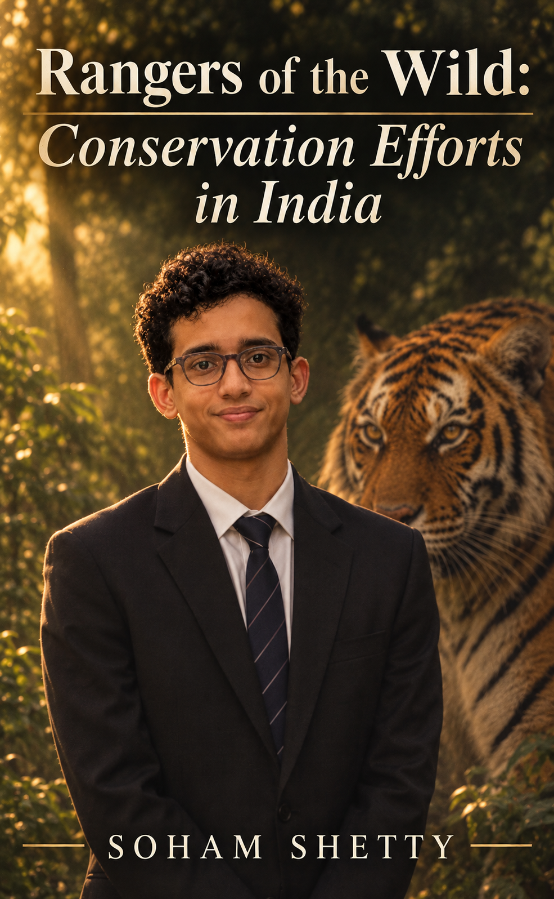
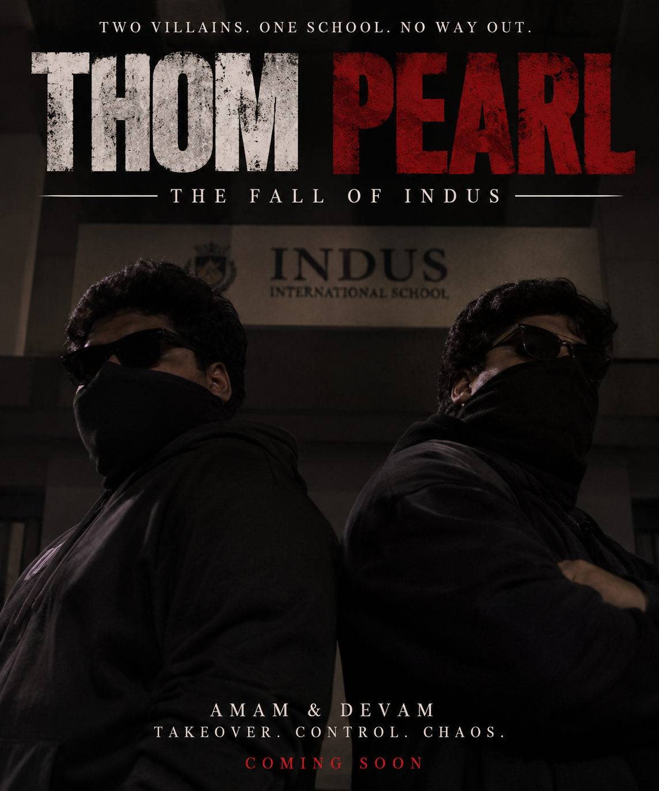
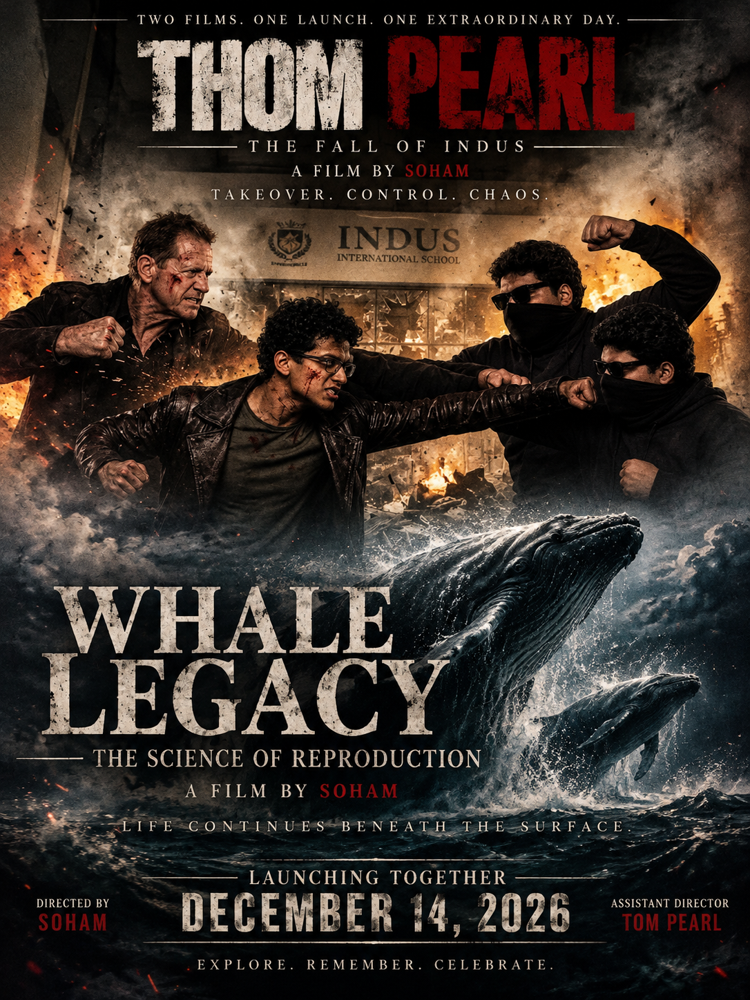
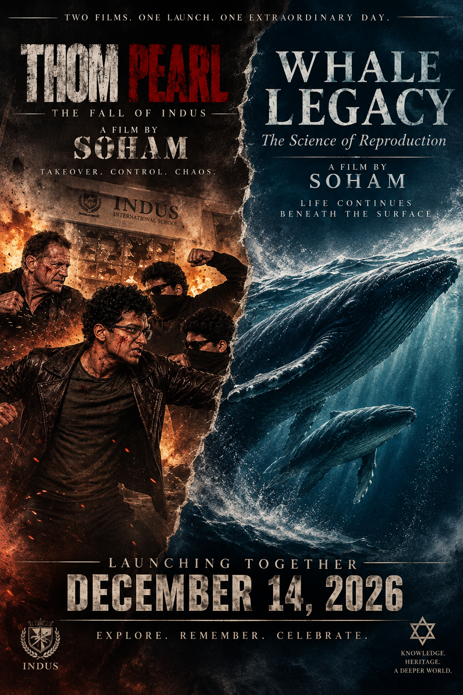

Soham Shetty · Book One
Rangers of the Wild: Conservation Efforts in India
The first Rangers of the Wild title, focused on conservation efforts in India. The book is listed as Soham Shetty’s work.
A shared home for the stories, books, screen concepts and creative experiments of Tom Pearl and Soham Shetty.

A school-set thriller concept centred on Soham and Tom, with Amam and Devam as the opposing forces.
At the centre of this collaborative story are Soham and Tom, caught in a conflict shaped by two antagonists, Amam and Devam. Set around Indus International School, The Fall of Indus is presented as a cinematic, high-stakes school thriller.
Project description based on the story concept discussed so far. A fuller synopsis, character notes and confirmed credits can be added as the manuscript develops.
A growing catalogue of individual projects and shared creative work.

The first Rangers of the Wild title, focused on conservation efforts in India. The book is listed as Soham Shetty’s work.
A wildlife thriller set in the fictional Kaalvan Wildlife Reserve. The story follows an investigation into a missing guard, illegal dumping and a mugger crocodile blamed for events around the reserve.
The compact edition has a prologue, seven chapters, an epilogue and selected bibliography. Add the final cover image and reading link when the site assets are assembled.

A whale-reproduction project developed as a comparative literature review on cetaceans, covering reproductive biology, mating systems, gestation, birth, parental care and conservation context.
Previously treated as a draft requiring subject-matter review. The poster is concept artwork, not evidence of a completed film release.
Two profiles, with room for each creator’s own voice and future additions.
Soham Shetty is the author of the Rangers of the Wild series, which brings wildlife and conservation themes into narrative form. His work includes Conservation Efforts in India and Return of the Mugger Crocodile, a wildlife thriller set in a fictional Indian reserve.
Alongside his books, Soham has developed research-led creative projects, including a comparative review of whale reproduction. He is also a co-creator of Soham & Tom vs. the World: The Fall of Indus.
Tom Pearl is a creative collaborator whose work with Soham Shetty includes Soham & Tom vs. the World: The Fall of Indus. The project places Tom alongside Soham at the centre of a story set around Indus International School, with Amam and Devam as its antagonists.
This archive gives Tom a dedicated space alongside Soham, with room to document his individual projects, writing, ideas and contributions as they are confirmed.
Existing concept artwork gathered for the archive. Poster text and creative credits should be checked by the creators before public release.
